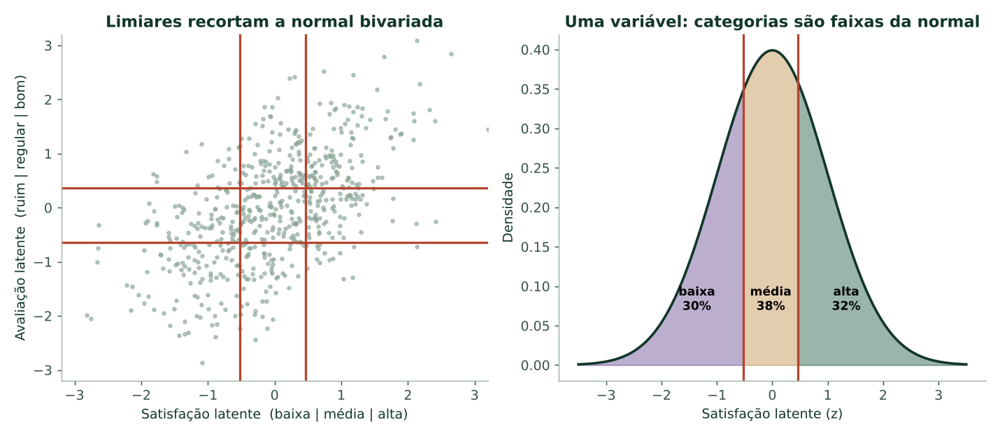
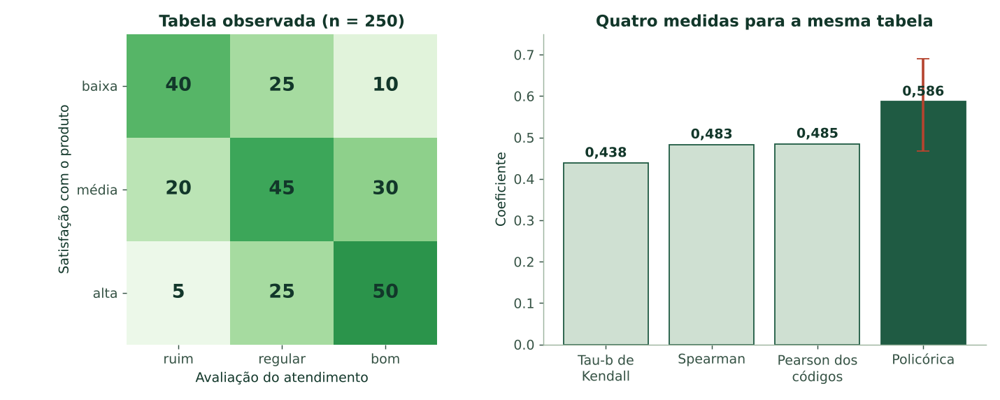

Correlação policórica
Estima a correlação entre duas escalas contínuas não observadas a partir de variáveis ordinais.
Comece por aqui
Questionários com respostas do tipo “discordo, neutro, concordo” ou classificações como “ruim, regular, bom” produzem variáveis ordinais. Tratar os códigos 1, 2, 3 como se fossem medidas contínuas subestima a associação. A correlação policórica segue outro caminho: admite que cada resposta é uma faixa de uma escala contínua não observada e estima a correlação entre essas escalas.
A correlação tetracórica é o caso particular com duas categorias em cada variável. Com três ou mais categorias, o mesmo raciocínio recebe o nome de policórica.
O que é o coeficiente
Cada variável ordinal com \(r\) categorias é vista como uma variável contínua normal recortada por \(r-1\) limiares. As duas variáveis latentes têm distribuição normal bivariada com correlação \(\rho\). Os limiares são obtidos das proporções marginais, e \(\rho\) é estimado por máxima verossimilhança: escolhe-se o valor que torna as frequências esperadas em cada célula o mais próximas possível das observadas.

Pressupostos e como verificá-los
| Pressuposto | Por que importa | Como verificar |
|---|---|---|
| Variáveis ordinais (categorias ordenadas) | A ordem define os limiares. | Natureza da escala. |
| Variável contínua subjacente a cada item | Dá sentido ao coeficiente. | Plausibilidade pelo contexto (opinião, intensidade, qualidade). |
| Normalidade bivariada latente | Modelo usado na estimação. | Teste de ajuste (qui-quadrado ou G²) entre frequências observadas e esperadas, possível quando a tabela é maior que 2 × 2. |
| Observações independentes | Cada unidade em uma única célula. | Delineamento do estudo. |
| Poucas células vazias | Células nulas tornam a estimação instável. | Inspecione a tabela; considere agrupar categorias raras. |
| Amostra moderada ou grande | Estimativas imprecisas com n pequeno e muitas categorias. | Como referência, n de 200 ou mais. |
Hipóteses e estimação
Em que:
- \(n_{ij}\)
- frequência observada na célula da linha i e coluna j
- \(n_{u\cdot},\ n_{\cdot v}\)
- totais da linha u e da coluna v
- \(a_i,\ b_j\)
- limiares das variáveis das linhas e das colunas (com \(a_0=b_0=-\infty\) e o último igual a \(+\infty\))
- \(\Phi^{-1}\)
- função quantil da normal padrão
- \(\Phi_2(x,y;\rho)\)
- função de distribuição acumulada da normal bivariada padrão
- \(\pi_{ij}(\rho)\)
- probabilidade da célula (i, j) segundo o modelo
- \(\hat\rho\)
- correlação policórica: valor que maximiza a verossimilhança
Exemplo numérico, passo a passo (limiares)
Na tabela do exemplo, os totais das linhas são 75, 95 e 80 (n = 250), e os das colunas, 65, 95 e 90.
Linhas: proporções acumuladas \(75/250=0{,}30\) e \(170/250=0{,}68\) ⇒ \(a_1=\Phi^{-1}(0{,}30)=-0{,}524\) e \(a_2=\Phi^{-1}(0{,}68)=0{,}468\).
Colunas: \(65/250=0{,}26\) e \(160/250=0{,}64\) ⇒ \(b_1=-0{,}643\) e \(b_2=0{,}358\).
Célula (baixa; ruim): \(\pi_{11}(\rho)=\Phi_2(-0{,}524;\,-0{,}643;\,\rho)\). Com \(\rho=0\), seria \(0{,}30\times0{,}26=0{,}078\) (19,5 clientes). Com \(\hat\rho=0{,}586\), sobe para \(0{,}154\) (38,5 clientes), bem perto dos 40 observados.
Propriedades, valor-p e intervalo de confiança
- \(-1\leq\hat\rho\leq1\), na escala de uma correlação de Pearson entre as variáveis latentes.
- Em valor absoluto, é maior que o Pearson ou o Spearman calculados sobre os códigos; a diferença cresce quando há poucas categorias.
- O procedimento em duas etapas (limiares pelas marginais; depois \(\rho\)) é o padrão dos programas e dá resultados muito próximos da estimação conjunta (OLSSON, 1979).
- O ajuste do modelo pode ser testado comparando frequências observadas e esperadas, com \(rc-r-c\) graus de liberdade.
- Erro-padrão e intervalo de confiança vêm da teoria de máxima verossimilhança ou de bootstrap.
- O teste de \(H_0:\rho=0\) pode ser feito pelo intervalo de confiança ou pelo qui-quadrado de independência.
Como interpretar os resultados
| Elemento | Leitura | Cuidado |
|---|---|---|
| ρ̂ policórica | Correlação estimada entre as escalas contínuas subjacentes. | Depende da plausibilidade do modelo latente. |
| Limiares | Posição das fronteiras entre categorias, em desvios-padrão. | Limiares muito próximos indicam categoria pouco usada. |
| Teste de ajuste com p alto | Frequências compatíveis com a normal bivariada latente. | Com n grande, pequenos desvios são rejeitados. |
| ρ̂ maior que Spearman | Esperado: a categorização atenua as correlações calculadas sobre os códigos. | Não misture os dois tipos na mesma análise. |
Reporte a tabela de frequências, a correlação policórica com intervalo de confiança e o método de estimação (duas etapas ou máxima verossimilhança conjunta).
Como executar no R e em Python
Onde executar o código em Python
Não é preciso instalar nada: o Google Colab é um computador na nuvem, gratuito, que executa Python pelo navegador e já traz as bibliotecas usadas aqui (numpy, scipy e matplotlib).
polychoric() pertence ao pacote psych e recebe os dados brutos (uma linha por unidade, colunas com as categorias codificadas em inteiros). Com várias colunas, devolve a matriz de correlações policóricas, muito usada em análise fatorial de itens. O pacote polycor traz polychor(), que aceita a tabela de contingência e informa o erro-padrão.
# install.packages("psych")
library(psych)
polychoric(dados) # "dados": colunas ordinais codificadas como 1, 2, 3, ...
Exemplo de aplicação
Contexto dos dados
Uma empresa perguntou a 250 clientes qual a satisfação com o produto (baixa, média, alta) e como avaliavam o atendimento (ruim, regular, bom). Queremos medir a associação entre as duas opiniões, entendidas como escalas contínuas das quais só as faixas foram registradas. Os dados são fictícios, criados para esta ficha.
Código em R
# Correlação policórica: exemplo completo ----
# Pacote: psych. Instale uma única vez: install.packages("psych")
library(psych)
# 1. Dados: 250 clientes; satisfação com o produto e avaliação do atendimento
tab <- matrix(c(40, 25, 10,
20, 45, 30,
5, 25, 50), nrow = 3, byrow = TRUE,
dimnames = list(satisfacao = c("baixa", "media", "alta"),
atendimento = c("ruim", "regular", "bom")))
tab
# 2. Dados brutos: uma linha por cliente, categorias codificadas de 1 a 3
dados <- data.frame(satisfacao = rep(rep(1:3, each = 3), times = as.vector(t(tab))),
atendimento = rep(rep(1:3, times = 3), times = as.vector(t(tab))))
table(dados)
# 3. Correlação policórica (rho) e limiares (tau)
polychoric(dados)
# 4. Comparação com coeficientes calculados sobre os códigos
c(pearson = cor(dados$satisfacao, dados$atendimento),
spearman = cor(dados$satisfacao, dados$atendimento, method = "spearman"),
kendall = cor(dados$satisfacao, dados$atendimento, method = "kendall"))
# 5. Teste de associação
chisq.test(tab)
# 6. Erro-padrão e teste do modelo normal latente (pacote polycor)
# install.packages("polycor")
# polycor::polychor(tab, ML = TRUE, std.err = TRUE)
# 7. Gráfico da tabela
mosaicplot(tab, color = c("gray85", "darkseagreen", "darkgreen"), main = "Satisfação e atendimento")
A mesma análise em Python, com os resultados
Cole o código em um notebook do Google Colab ↗ e execute com Shift+Enter. Os valores abaixo são a saída desse código.
# Bibliotecas: numpy, scipy e matplotlib (já instaladas no Google Colab)
import numpy as np
from scipy import stats, optimize
import matplotlib.pyplot as plt
def phi2(x, y, r):
"""Função de distribuição acumulada da normal bivariada padrão com correlação r."""
x, y = np.clip([x, y], -8, 8)
return stats.multivariate_normal(mean=[0, 0], cov=[[1, r], [r, 1]]).cdf([x, y])
def policorica(tab):
"""Correlação policórica em duas etapas: limiares pelas marginais, r por máxima verossimilhança."""
tab = np.asarray(tab, dtype=float); n = tab.sum()
a = np.r_[-np.inf, stats.norm.ppf(np.cumsum(tab.sum(axis=1))[:-1] / n), np.inf] # limiares das linhas
b = np.r_[-np.inf, stats.norm.ppf(np.cumsum(tab.sum(axis=0))[:-1] / n), np.inf] # limiares das colunas
def probs(r):
F = np.array([[phi2(ai, bj, r) if np.isfinite(ai) or ai > 0 else 0.0 for bj in b] for ai in a])
F[0, :] = 0; F[:, 0] = 0
return F[1:, 1:] - F[:-1, 1:] - F[1:, :-1] + F[:-1, :-1]
menos_logv = lambda r: -np.sum(tab * np.log(np.clip(probs(r), 1e-12, None)))
res = optimize.minimize_scalar(menos_logv, bounds=(-0.99, 0.99), method="bounded", options={"xatol": 1e-6})
return res.x, a[1:-1], b[1:-1], probs(res.x) * n
# 1. Dados: 250 clientes; satisfação com o produto (linhas) e avaliação do atendimento (colunas)
# atendimento: ruim regular bom
tab = np.array([[40, 25, 10], # satisfação baixa
[20, 45, 30], # satisfação média
[ 5, 25, 50]]) # satisfação alta
n = tab.sum()
print("Totais das linhas:", tab.sum(axis=1), "| das colunas:", tab.sum(axis=0), "| n =", n)
# 2. Correlação policórica
r_p, lim_lin, lim_col, esperado = policorica(tab)
print("Limiares das linhas:", np.round(lim_lin, 4), "| das colunas:", np.round(lim_col, 4))
print(f"Correlação policórica = {r_p:.4f}")
print("Frequências esperadas pelo modelo:\n", np.round(esperado, 1))
# 3. Qualidade do ajuste do modelo normal bivariado latente
G2 = 2 * np.sum(tab * np.log(tab / esperado)); gl = tab.size - 1 - (tab.shape[0] - 1) - (tab.shape[1] - 1) - 1
print(f"Razão de verossimilhanças G² = {G2:.3f}, gl = {gl}, p-valor = {stats.chi2.sf(G2, gl):.4f}")
# 4. Comparação com coeficientes calculados sobre os códigos 1, 2, 3
x = np.repeat([1, 2, 3], tab.sum(axis=1))
y = np.concatenate([np.repeat([1, 2, 3], linha) for linha in tab])
print(f"Pearson dos códigos = {stats.pearsonr(x, y).statistic:.4f} | Spearman = {stats.spearmanr(x, y)[0]:.4f} | tau-b de Kendall = {stats.kendalltau(x, y).statistic:.4f}")
# 5. Teste de associação (qui-quadrado de independência)
qui2, p, glq, _ = stats.chi2_contingency(tab)
print(f"Qui-quadrado = {qui2:.2f}, gl = {glq}, p-valor = {p:.2e}")
# 6. Intervalo de confiança de 95% por bootstrap (reamostragem da tabela)
rng = np.random.default_rng(2026)
boot = [policorica(rng.multinomial(n, tab.ravel() / n).reshape(3, 3))[0] for _ in range(300)]
print("Erro-padrão bootstrap:", round(float(np.std(boot, ddof=1)), 4), "| IC 95%:", np.round(np.percentile(boot, [2.5, 97.5]), 3))
# 7. Gráfico: tabela observada
plt.imshow(tab, cmap="Greens")
for i in range(3):
for j in range(3): plt.text(j, i, str(tab[i, j]), ha="center", va="center", fontsize=14)
plt.xticks([0, 1, 2], ["ruim", "regular", "bom"]); plt.yticks([0, 1, 2], ["baixa", "média", "alta"])
plt.xlabel("Atendimento"); plt.ylabel("Satisfação"); plt.show()
Resultados da execução
Totais das linhas: [75 95 80] | das colunas: [65 95 90] | n = 250 Limiares das linhas: [-0.5244 0.4677] | das colunas: [-0.6433 0.3585] Correlação policórica = 0.5864 Frequências esperadas pelo modelo: [[38.5 27.9 8.5] [21.3 42.8 30.9] [ 5.2 24.2 50.5]] Razão de verossimilhanças G² = 0.870, gl = 3, p-valor = 0.8328 Pearson dos códigos = 0.4847 | Spearman = 0.4829 | tau-b de Kendall = 0.4383 Qui-quadrado = 64.86, gl = 4, p-valor = 2.76e-13 Erro-padrão bootstrap: 0.0577 | IC 95%: [0.468 0.691]

| Elemento | Valor | Leitura |
|---|---|---|
| Limiares das linhas | −0,524 e 0,468 | Fronteiras entre baixa, média e alta. |
| Limiares das colunas | −0,643 e 0,358 | Fronteiras entre ruim, regular e bom. |
| Correlação policórica | 0,586 | Associação positiva moderada a forte entre as escalas latentes. |
| IC 95% (bootstrap) | [0,468; 0,691] | Erro-padrão de 0,058; varia levemente conforme a semente. |
| Ajuste do modelo | G² = 0,87; 3 g.l.; p = 0,833 | Frequências compatíveis com a normal bivariada latente. |
| Pearson / Spearman / tau-b dos códigos | 0,485 / 0,483 / 0,438 | Atenuados pela categorização. |
| Qui-quadrado de independência | 64,86; 4 g.l.; p = 2,8 × 10⁻¹³ | Evidência forte de associação. |
Leitura: clientes mais satisfeitos com o produto tendem a avaliar melhor o atendimento. As frequências esperadas pelo modelo (38,5; 27,9; 8,5 na primeira linha, por exemplo) reproduzem bem as observadas (40; 25; 10), e o teste de ajuste não aponta problema. A correlação de 0,59 refere-se às escalas contínuas subjacentes; quem calculasse o Pearson dos códigos concluiria por uma associação mais fraca, de 0,48.
Erros comuns
| Erro | Como evitar |
|---|---|
| Aplicar a variáveis nominais | As categorias precisam ter ordem. |
| Tratar o resultado como correlação entre os códigos | É a correlação entre variáveis latentes. |
| Ignorar células vazias e categorias raras | Agrupe categorias adjacentes ou aumente a amostra. |
| Não verificar o ajuste do modelo latente | Compare frequências observadas e esperadas. |
| Usar com amostras pequenas e muitas categorias | A estimativa fica imprecisa; reporte o intervalo de confiança. |
| Misturar policóricas e Pearson na mesma matriz sem critério | Para variáveis mistas, use as correlações apropriadas a cada par (psych::mixedCor). |
Alternativas e fluxo de trabalho
| Procedimento | Quando preferir |
|---|---|
| Spearman ou tau-b de Kendall | Descrever a associação entre as ordenações observadas, sem modelo latente. |
| Tetracórica | Duas categorias em cada variável. |
| Correlação polisserial | Uma variável ordinal e outra contínua. |
| Gama de Goodman–Kruskal | Tabelas ordinais com muitos empates. |
| Qui-quadrado de independência | Apenas testar a associação. |
| Regressão logística ordinal | Uma das variáveis é a resposta a ser explicada. |
- Confirme que as variáveis são ordinais e que a ideia de escala latente faz sentido.
- Monte a tabela de contingência e verifique células vazias.
- Estime a policórica e os limiares.
- Avalie o ajuste e reporte o intervalo de confiança.
Referências desta ficha
- PEARSON, Karl. Mathematical contributions to the theory of evolution. VII. On the correlation of characters not quantitatively measurable. Philosophical Transactions of the Royal Society of London. Series A, v. 195, p. 1-47, 1900.
- OLSSON, Ulf. Maximum likelihood estimation of the polychoric correlation coefficient. Psychometrika, v. 44, n. 4, p. 443-460, 1979.
- DRASGOW, Fritz. Polychoric and polyserial correlations. In: KOTZ, Samuel; JOHNSON, Norman L. (ed.). Encyclopedia of statistical sciences. New York: Wiley, 1986. v. 7, p. 68-74.
- AGRESTI, Alan. Analysis of ordinal categorical data. 2. ed. Hoboken: Wiley, 2010.
- REVELLE, William. psych: procedures for psychological, psychometric, and personality research. R package. Evanston: Northwestern University. Disponível em: https://CRAN.R-project.org/package=psych.
- FOX, John. polycor: polychoric and polyserial correlations. R package. Disponível em: https://CRAN.R-project.org/package=polycor.
- EFRON, Bradley; TIBSHIRANI, Robert J. An introduction to the bootstrap. New York: Chapman & Hall, 1993.
- R CORE TEAM. R: a language and environment for statistical computing. Vienna: R Foundation for Statistical Computing, 2026. Disponível em: https://www.r-project.org/.
- POSIT TEAM. RStudio: integrated development environment for R. Boston: Posit Software, PBC. Disponível em: https://posit.co/download/rstudio-desktop/.
- VIRTANEN, Pauli et al. SciPy 1.0: fundamental algorithms for scientific computing in Python. Nature Methods, v. 17, p. 261-272, 2020. DOI: 10.1038/s41592-019-0686-2. (Funções do módulo
scipy.stats.) - HARRIS, Charles R. et al. Array programming with NumPy. Nature, v. 585, p. 357-362, 2020. DOI: 10.1038/s41586-020-2649-2.
- HUNTER, John D. Matplotlib: a 2D graphics environment. Computing in Science & Engineering, v. 9, n. 3, p. 90-95, 2007.
- GOOGLE. Google Colaboratory. Disponível em: https://colab.research.google.com/.
- Os dados do exemplo são fictícios e foram criados pelo autor. As figuras desta ficha foram elaboradas pelo autor.

Prof. Dr. Cássius Henrique Xavier Oliveira
Professor · ICTIN/UFLA · Estatística, Confiabilidade e Ciência de Dados.
Conheça minha trajetória e projetos →